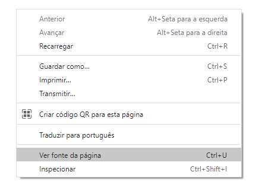
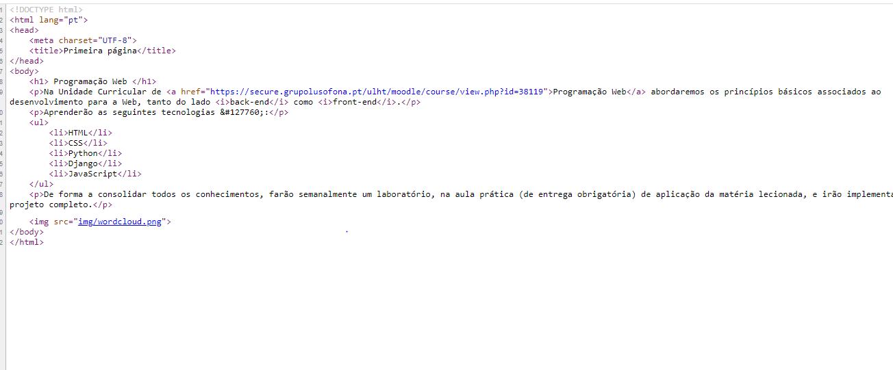
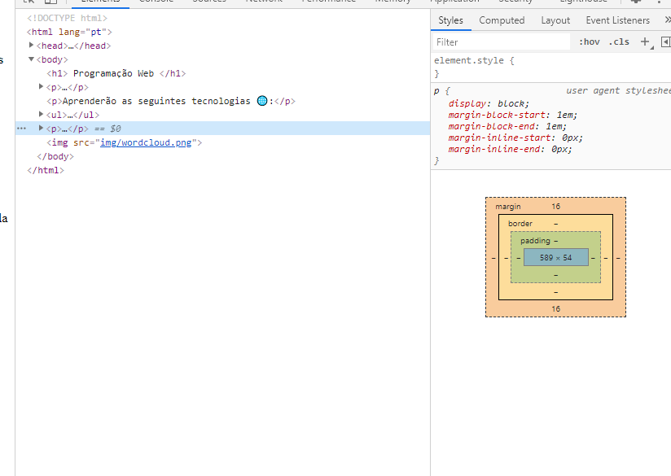
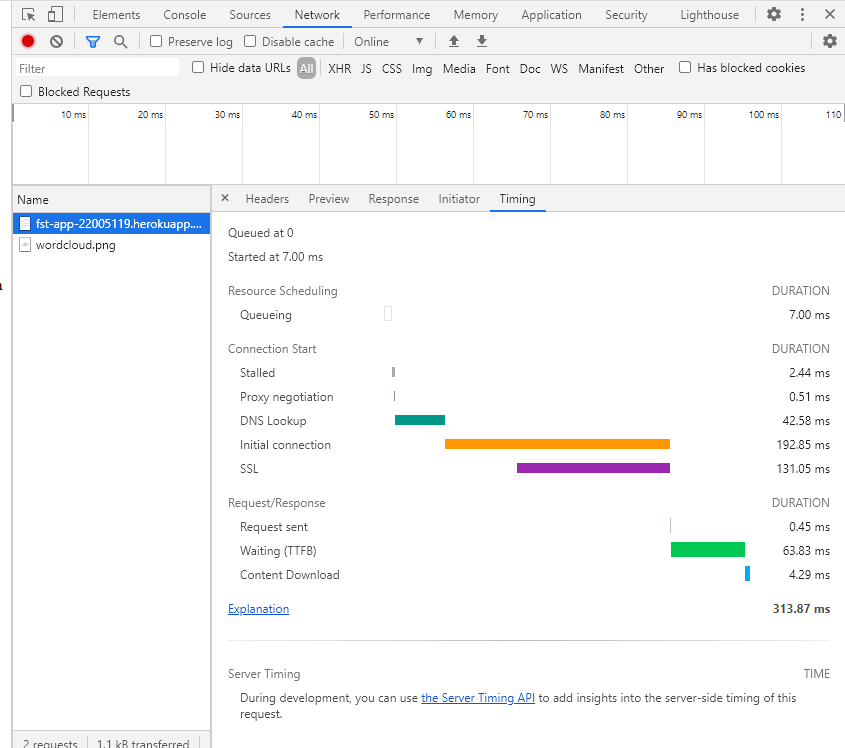
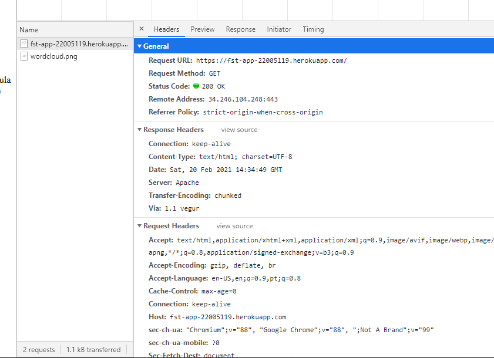

Na aula laboratorial de programação web, fizemos a nossa primeira página web.
Mais tarde vimos os nossos ip's e os das nossas páginas, para comparar-mos os percursos feitos, e onde elas estão alojadas.
A baixo, podemos-ver os ip's:
Usámos a ferramenta Geotraceroute para vermos o caminho que a nossa página fez desde o server, até ao nosso ecrã.
A baixo podemos ver as rotas que a página fez. (não sei qual delas é a correta)
Aceder ao codigo fonte da nossa página (ver o codigo por detrás da web page)
 Temos o nosso código fonte
Fazendo inspect á página temos algo deste género:
O que vemos é os elementos da página, tanto codigo como imagens.Temos a baixo os ficheiros descarregados:
Aqui podemos ver os timings até ao fim do carregamento da página.
O que vimos na imagem é basicamente o tempo de demora dos protocolos, em milissegundos, desde o pedido ao servidor, até á página aparecer completa.
É basicamente um relatório de execução da página (i think)
